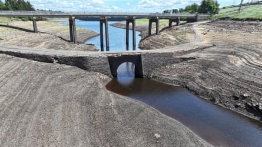

England’s reservoirs are at their lowest levels for a decade, new data reveals, as experts urge water companies to immediately put hosepipe bans in place.
In June, reservoirs across the country were 76% full, which is below their level in the severe drought year of 2022 when they were at 77% capacity at this time in the summer.
Levels continue to drop dramatically as the hot weather has caused an increased demand for water and there has been very little rain to refill reservoirs.
Experts have warned water companies to implement hosepipe bans across the country. Dr Jess Neumann, an associate professor in hydrology at the University of Reading, said: “Following an unseasonably dry spring reservoir levels across parts of the country are falling to critically low levels.
“Water companies need to be proactive. Hosepipe bans can save 3%-7% of daily water use as long as the public are onboard with the need to conserve water. Hosepipe bans have the additional advantage of increasing awareness of water scarcity and stress amongst communities, further encouraging mindful water use.”
Dr Jonathan Paul, from the department of Earth sciences at Royal Holloway, University of London, added: “Reservoir levels are directly linked to rainfall, so local restrictions on water use (like hosepipe bans) might be necessary to stabilise them.”
Yorkshire Water this week introduced hosepipe restrictions after the region recorded its driest spring in 132 years. South East Water on Friday also announced a hosepipe ban for more than one million people in Kent and Sussex.
Water bosses have been reluctant to implement hosepipe bans because it affects customer satisfaction ratings, sources at the government’s national drought group have told the Guardian. These ratings, collected by the regulator, contribute to a water company’s performance report.
Sources at the drought group, which convenes regularly to discuss the response to droughts, said the companies were waiting “until the very last moment” to put bans in place. Rivers are at low levels already, and further abstraction could risk environmental damage.
Environment Agency officials have been advising the environment secretary, Steve Reed, on whether water company drought plans are sufficient. They said water companies should follow their drought plans and hosepipe bans should be in place prior to any permits for extra river abstraction, and in place long enough to have the opportunity to have a measurable impact on reducing customer demand.
Yorkshire Water introduced hosepipe restrictions this week; water levels at Baitings reservoir near Ripponden have continued to drop.Photograph: Christopher Furlong/Getty Images
In some areas of the country where no hosepipe bans are in place, farmers have been severely restricted from irrigating their land.
The National Farmers’ Union president, Tom Bradshaw, has said this was “risking food production”, particularly in East Anglia where many farms are based. The county had exceptionally low rainfall this spring, the third lowest on record since 1871, with reservoir and groundwater levels dropping. There is no hosepipe ban in place for residents, yet farmers have been struggling to water their crops.
Bradshaw told the Guardian: “Abstraction bans have already been implemented in Norfolk with no prior engagement or warning. It seems ridiculous when there is no official drought or hosepipe ban.”
The regions at most risk of running out of water at the moment are those which rely largely on reservoirs rather than groundwater.
The wet autumn and winter of 2024-25 allowed the country’s aquifers – the water below ground – to recharge, so parts of the south-east, where the soil is chalk and the aquifers recharge more rapidly, are in a better position than those in the Midlands and north.
However, more dry weather could cause aquifer levels to begin to dwindle as well, and groundwater levels are already below normal across much of the country. The most recent outlook from the UK Centre for Ecology and Hydrology says: “The outlook for July indicates that groundwater levels are likely to remain normal to below normal across most areas, with notably or exceptionally low levels expected to persist in some areas.”
Neumann added: “Pressures on water supply are not limited to UK regions principally reliant on reservoirs, but are also impacting areas where supply is fed from groundwater sources such as the central and south east. This is concerning as groundwater stores are not as quickly replenished [as rivers and reservoirs] when the rains do eventually come.”
The prolonged dry spring and summer coupled with hot weather, which increases consumer water use, has caused reservoir levels in midland and northern areas of the country to drop dramatically.
Severn Trent’s reservoir levels have dropped from 83.5% on 23 May to 71.1% on 30 June, while United Utilities reservoir levels are currently at 65% when last year at this time they were at 84.5%.
Yorkshire’s reservoirs are at 55.8%, down more than a quarter on what they would normally be at this time of year.
Last year the government and water companies announced proposals to build nine new reservoirs by 2050. No major reservoirs have been completed in England since 1992, shortly after the water sector was privatised.
A Water UK spokesperson said: “Water companies do everything possible to avoid restrictions on customers, including by moving water around their region and surging activity on leakage. However, when government-mandated trigger levels are reached then unfortunately a temporary use ban needs to be imposed.”
A Department for Environment, Food and Rural Affairs spokesperson said: “Rapid population growth, crumbling infrastructure and a warming climate mean without urgent action, Britain could run out of drinking water. We have taken swift and decisive action to secure £104bn of private sector investment to build nine reservoirs and new pipes to cut leaks.”